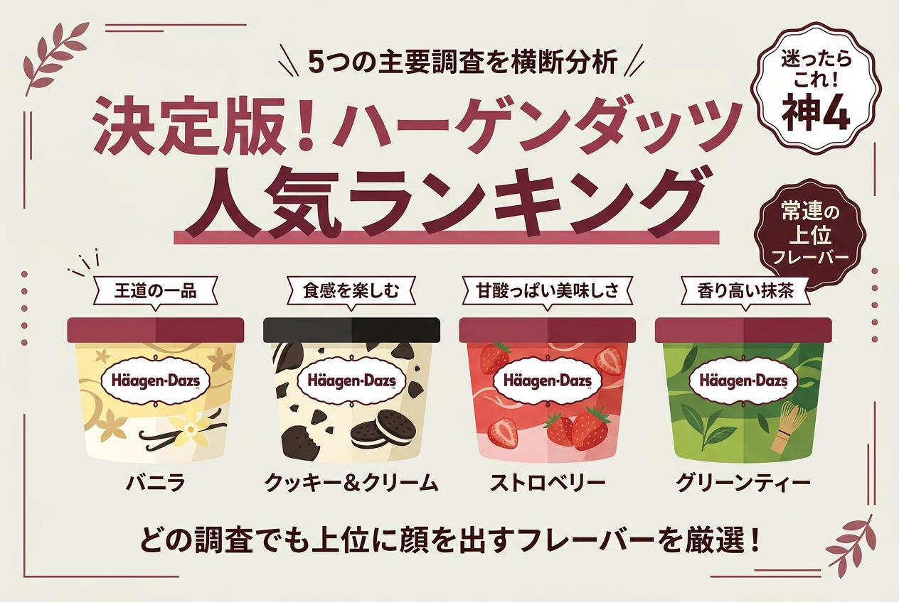
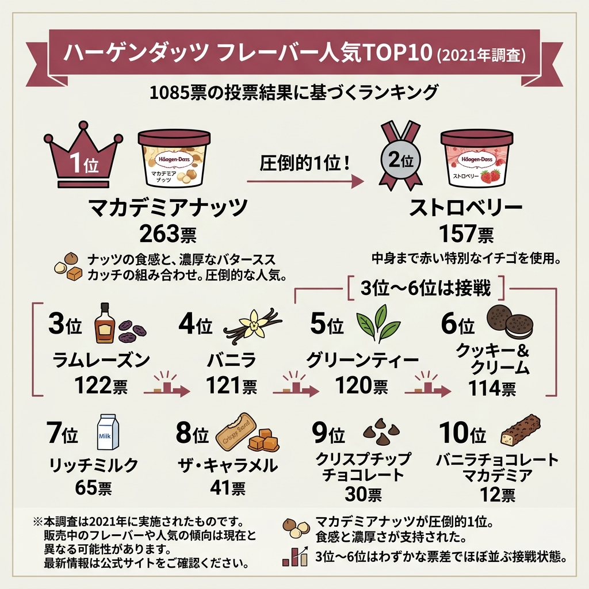
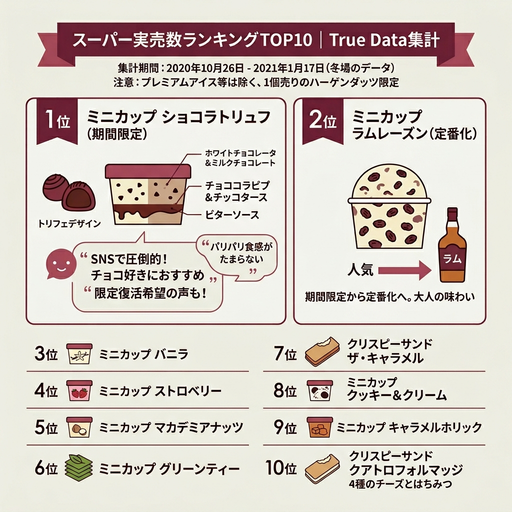
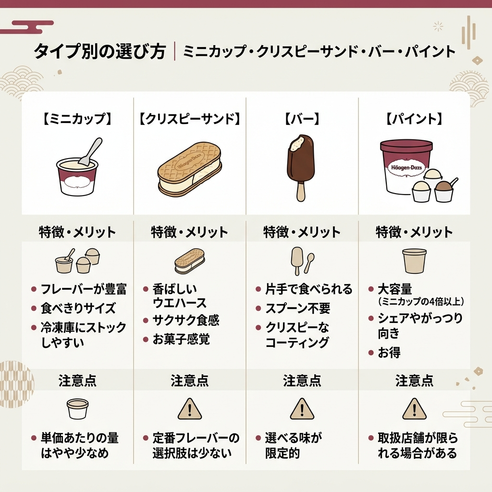
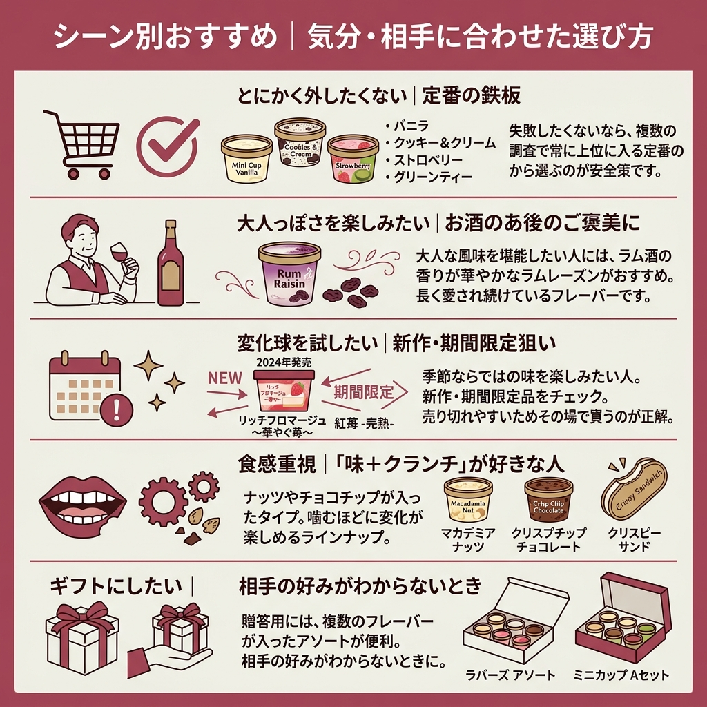

「結局、ハーゲンダッツって何味が一番おいしいの？」と棚の前で迷う時間は、けっこう損をしている気がします。
調べていくと面白いのが、ハーゲンダッツの人気ランキングは「誰が、いつ、どう調査したか」で順位がバラバラだということ。
この記事では公開されている主要な調査5本を横断して、本当に支持されている定番フレーバーと、いま狙うべき新商品まで一気に整理しました。

先に結論をどうぞ。ハーゲンダッツのランキングは調査によって順位が大きく入れ替わります。
でも、5本の調査を並べてみると「どの調査でも上位に顔を出すフレーバー」がはっきり見えてきます。
結局、迷ったときに買えば外さないのってどれですか？
5本の調査を横断して常に上位にいるのは「バニラ」「クッキー＆クリーム」「ストロベリー」「グリーンティー」の4つ。まずはここから選ぶのが安全です。
| 調査 | 1位 | 特徴 |
|---|---|---|
| ハフポスト調査（2024年12月発表） | ミニカップ バニラ | 月1回以上食べる10〜60代300名対象 |
| ねとらぼ調査隊（2021年） | ミニカップ マカデミアナッツ | 1085件の投票結果 |
| 『ラヴィット！』プロ選定 | ミニカップ キャラメルホリック | アイス職人による評価 |
| True Data 売上集計 | ミニカップ ショコラトリュフ | スーパー実売数ベース |
| LINEリサーチ | クッキー＆クリーム | 10〜50代男女対象アンケート |
この記事では、それぞれの調査を順番に深掘りしていきます。
そもそも、なぜハーゲンダッツのランキングはここまで話題になるのでしょうか。
答えは、コンビニやスーパーのアイス棚で“別格扱い”になっている点にあります。
ハーゲンダッツは1961年にニューヨークで誕生し、1984年に日本へ上陸しました。創業当初からミルク・たまご・いちごなど素材の品質にこだわり続けています。
新作フレーバーが頻繁に登場するため、毎シーズン楽しみがあって飽きない、という声も多いブランドです。
ミニカップやクリスピーサンドの多くは税別295円。
少々値ははりますが、素材の美味しさやフレーバーの多さが他のアイスにはない魅力として支持されています。
現在、日本国内での店舗展開はしていません。
全国のスーパーや、セブンイレブン・ローソン・ファミリーマートなどのコンビニで購入できます。
まずは比較的新しい調査から見ていきましょう。
ハーゲンダッツ ジャパンが2024年12月10日に発表した、定番フレーバーに関するアンケート調査の結果です。月に1回以上ハーゲンダッツを食べる10代から60代の300名が対象で、2024年11月に実施されました。
| 順位 | フレーバー | 得票率 |
|---|---|---|
| 1位 | ミニカップ バニラ | 24.7% |
| 2位 | ミニカップ クッキー＆クリーム | 17.0% |
| 3位 | ミニカップ ストロベリー | 15.3% |
| 4位 | ミニカップ グリーンティー | 非公表 |
| 5位 | ミニカップ ラムレーズン | 非公表 |
1位はハーゲンダッツの代名詞ともいえるバニラ。「濃厚なバニラの味が口いっぱいに広がる」「濃厚で上品な味わい」と、根強い支持を受けています。
このアンケートでは、回答者のあいだで味噌パウダーやポテトチップスと合わせるアレンジ方法が多く提案されていました。
「そのまま食べる派」が多数を占めるなかで、こうした自由な食べ方が共有されているのは面白い特徴です。
1位はミニカップ『バニラ』（24.7%）。「濃厚で上品な味わい」と評価されている。
ハフポスト LIFE「好きな『ハーゲンダッツ』ランキング」より

もう少し票数の多い調査も見ておきましょう。
ねとらぼ調査隊が2021年8月17日から8月23日にかけて実施した「ハーゲンダッツで一番好きなフレーバーは？」というアンケート。投票対象は2021年8月16日時点のハーゲンダッツジャパン商品情報ページからピックアップした定番フレーバー10種類で、計1085件の投票が集まりました。
ココナッツオイルでローストされたマカデミアナッツと、濃厚な味わいのバタースカッチの組み合わせ。ナッツの食感を楽しめる濃厚なアイスクリームです。
ハーゲンダッツの創始者が6年かけて開発したフレーバー。中身まで赤い特別なイチゴを使用し、濃厚な味わいと華やかな香りでアイスクリームのうま味を引き立てます。
香り豊かなラム酒に漬けたカリフォルニア産レーズンをたっぷり使用。芳醇な香りとミルクの味わいが楽しめます。
香りの深いマダガスカル産レッドビーンズを使用。バニラの花の受粉や収穫、湯漬けなどはすべて職人の手で行われています。
うま味と渋味のバランスがよい「初摘み茶葉」を使用。7年もの年月をかけて生み出されました。
クリーミーで甘いバニラアイスと、ほろ苦いココア風味のクッキーが絶妙なハーモニーを奏でます。
北海道産のミルクを使用。乳牛が食べる牧草の土壌にまでこだわっています。
キャラメルアイスクリームをミルク風味のキャラメルでコーティングし、香ばしいウエハースでサンド。
ベルギー産のチョコレートを使ったアイスに、パリッとしたチョコレートチップをトッピング。
濃厚なバニラアイスとわずかにソルティなミルクチョコレートのバランスがよいクランチバー。
注目したいのは3〜6位までの票差。
122・121・120・114票と、ほぼ団子状態です。この4つはどれを選んでも“正解”といえるレベルで愛されている、と読めます。
マカデミアナッツが圧倒的1位なのは意外でした。
2位のストロベリーに100票以上の差をつけているのがポイント。「ナッツの食感」「バタースカッチの濃厚さ」という他にない要素が支持されたと考えられます。
一般投票とはまったく別の角度から評価したのが、テレビ番組『ラヴィット！』（TBS系）の特集です。
2021年9月1日に放送された回で、超一流アイス職人たちが定番から期間限定までを評価し、トップ10を発表しました。
| 順位 | フレーバー | 評価ポイント |
|---|---|---|
| 1位 | ミニカップ キャラメルホリック（期間限定） | 濃厚なキャラメルアイスにバタースカッチ、隠し味の塩 |
| 2位 | クリスピーサンド アーモンドバターサンド（期間限定） | 濃厚バターと香ばしいアーモンドの風味 |
| 3位 | ミニカップ グリーンティー | 開発に7年、こだわりの茶葉を使用した濃厚な抹茶 |
1位のキャラメルホリックは、ブラウンシュガーを煮詰めたバタースカッチを加え、隠し味に塩を使用した一品。
アイスのプロたちも感心の声を上げていた、と紹介されています。
同じ番組内では、お笑い芸人・こがけんさんが考案したオリジナルレシピも紹介されました。
はちみつ大さじ1と粒マスタード大さじ1／2を混ぜ合わせてハニーマスタードを作り、ミニカップ バニラにかけ、仕上げに黒胡椒をひとつまみ振りかける、という内容です。
試食したおいでやす小田さんは「アイスじゃないみたい」「料理っぽい、味が深い」と新たな美味しさに驚いた、と紹介されています。
もう1つ、ハーゲンダッツジャパンが推すちょい足しが「かぼちゃ煮＆シナモン」。
ミニカップ バニラをデッシャーで皿に盛り、皮を除いて小さくカットしたかぼちゃの煮物をのせ、シナモンを振りかける、というアレンジです。

「人気投票より、実際に売れている数で見たい」という人向けの調査もあります。
データマーケティングサービスを提供する「True Data」が集計した、全国スーパーマーケットでのハーゲンダッツ商品の販売数ランキングです。集計期間は2020年10月26日から2021年1月17日の約3か月間で、データ抽出日は2021年1月29日。
| 順位 | フレーバー |
|---|---|
| 1位 | ミニカップ ショコラトリュフ（期間限定） |
| 2位 | ミニカップ ラムレーズン |
| 3位 | ミニカップ バニラ |
| 4位 | ミニカップ ストロベリー |
| 5位 | ミニカップ マカデミアナッツ |
| 6位 | ミニカップ グリーンティー |
| 7位 | クリスピーサンド ザ・キャラメル |
| 8位 | ミニカップ クッキー＆クリーム |
| 9位 | ミニカップ キャラメルホリック |
| 10位 | クリスピーサンド クアトロフォルマッジ 4種のチーズとはちみつ |
1位のショコラトリュフは2020年11月17日から期間限定で販売されていた商品。
ホワイトチョコレートアイスとミルクチョコレートアイスを重ねた層構造で、ホワイトチョコアイスの中にはパリパリ食感のホワイトチョコチップとほろ苦いビターチョコソースが入っています。
個性の違う3種のチョコレートをまるでトリュフのように一度に味わう設計です。
「期間限定ってのが惜しい常駐してくれ」という要望も寄せられていた、と紹介されています。
2位のラムレーズンは、もともと期間限定だったフレーバー。
2020年8月4日に発売以降、定番商品の仲間入りをしたことで、1年中いつでも楽しめるようになりました。
ハーゲンダッツオリジナルの香り高いラム酒にじっくりと漬け込んだレーズンを使用し、なめらかな口どけと芳醇な香りが大人のアイスとして支持されています。
定番だけでなく、新作をどう選ぶかも気になるところ。
先ほどのハフポスト調査では、定番フレーバーとは別に「2024年に発売された新商品の中で“食べたい”と思うフレーバー」もアンケートが実施されていました。
| 順位 | 商品名 | 特徴 |
|---|---|---|
| 1位 | リッチフロマージュ ～華やぐ苺～ | フロマージュの濃厚な味わいと苺の華やかな酸味 |
| 2位 | クランブルベイクドチーズケーキ（バーアイス） | 濃厚チーズのコクとサクサクのクランブル食感 |
| 3位 | 紅苺 -完熟-（40周年記念） | 完熟苺の豊かな甘みと鮮やかなルビー色 |
1位に選ばれたのは『リッチフロマージュ ～華やぐ苺～』。
フロマージュの濃厚な味わいと苺の華やかな酸味が絶妙なバランスで、まるでデザートを食べているかのようなリッチな味わいが支持を集めました。
「高級感のあるなかに華やかさがある」と、その美しい見た目も評判です。
2位はバーアイスの『クランブルベイクドチーズケーキ』。
チーズケーキ好きにはたまらない濃厚なチーズのコクとサクサクとしたクランブルの食感が魅力で、「濃厚なベイクドチーズの味に惹かれた」と高評価を得ています。
3位は40周年記念商品として登場した『紅苺 -完熟-』。
完熟苺の豊かな甘みと鮮やかなルビー色が特長で、記念商品らしい特別感と贅沢さで多くのファンの心をつかみました。「苺の濃厚さが半端ない」という声が寄せられています。
ハーゲンダッツの人気を語るうえで外せない調査がもう1つあります。
LINEリサーチが10代から50代の男女に対して実施した「スーパーやコンビニで買えるアイスで一番好きなもの」というアンケート。総合1位に輝いたのは、ほかでもない「ハーゲンダッツ ミニカップ」でした。
特に女性に人気があり、すべての年齢層で1位を独占したと紹介されています。
世代によってはクリスピーサンドシリーズもランクインするなど、ハーゲンダッツは幅広い形態で支持を集めていることがわかります。
| 順位 | フレーバー | 備考 |
|---|---|---|
| 1位 | クッキー＆クリーム | 50代以外のすべての年代で1位 |
| 2位 | バニラ | 男性のランキングでは1位 |
| 3位 | ストロベリー | すべての年代で上位の安定人気 |
1位のクッキー＆クリームは、50代以外のすべての年代で1位を占める人気ぶり。
2位のバニラは男性ランキングでは1位になっており、特に10代と50代の男性から強い支持を集めています。
3位のストロベリーはすべての年代で上位に選ばれ、安定した人気がうかがえる結果でした。
男女で1位が変わるのが面白いですね。
男性は「シンプルで濃厚なバニラ」、女性とほかの年代は「ココアクッキーの遊び心があるクッキー＆クリーム」、と支持が分かれた結果です。

順位の話だけだと「結局どれを買うか」が決まりにくいですよね。
ハーゲンダッツはフレーバーだけでなく、形（タイプ）の選択肢も豊富。次は形ごとの特徴と向き不向きを整理します。
ミニカップはハーゲンダッツの中でもオーソドックスなタイプで、フレーバーの種類が圧倒的に多いのが特徴。
1回分の食べきりサイズなので、ちょっとした自分へのごほうびにちょうどよく、冷凍庫の場所も取らないのでストックも楽です。
クリスピーサンドは、香ばしいウエハース生地でアイスをサンドしたタイプ。
クリスピーサンド ザ・キャラメルはまろやかなキャラメルアイスをミルク風味のキャラメルでコーティングしたうえでサンドしており、濃厚な甘さとサクサクした食感が両方楽しめます。
スプーンなしで気軽に食べたいなら、バータイプ。
バー バニラチョコレートマカデミアは、濃厚なバニラアイスと、わずかにソルティなミルクチョコレートのバランスがよいクランチバーで、クリスピーな食感が楽しめます。
家族や友だちと分けたり、1人で思う存分食べたい場合は、パイントや業務用パックが便利。
パイントはミニカップの4倍以上、業務用パックは2L、と一気にスケールが変わります。フレーバーはミニカップほど豊富ではありませんが、定番のものは通販でも購入可能です。

ここまで読んで「自分はどれを選べばいいの？」と思った人向けに、シーン別の指針をまとめます。
失敗したくないなら、複数の調査で常に上位に入る定番の中から選ぶのが安全策です。
大人な風味を堪能したい人には、ラム酒の香りが華やかなラムレーズンがおすすめ。
ハーゲンダッツが日本に上陸した1984年から長く愛され続けているフレーバーで、香り豊かなラムレーズンとミルクの組み合わせが絶妙です。
季節ならではの味を楽しみたい人は、新作・期間限定品をチェック。
2024年に発売された商品では、リッチフロマージュ ～華やぐ苺～ や紅苺 -完熟- など、フルーツを主役にした華やかなフレーバーが評価を集めました。
食感を楽しみたい人には、ナッツやチョコチップが入ったタイプが向いています。
マカデミアナッツのカリッとした独特な食感、クリスプチップチョコレートのパリッとしたチョコチップ、クリスピーサンドのサクサク生地など、噛むほどに変化が楽しめるラインナップが揃っています。
贈答用には、複数のフレーバーが入ったアソートが便利。
ラバーズ アソートはバニラ・ストロベリー・クッキー＆クリームのような誰もが好きなフレーバーを組み合わせたセット、ミニカップ Aセットは定番フレーバー6種が2個ずつ入ったセットです。
最後に、ハーゲンダッツのランキングを調べる過程でよく出てくる質問をまとめておきます。
調査がたくさんありすぎて、結局どれを信じればいいのかわからなくなりました…。
「自分が選ぶ理由」を1つ決めると楽です。投票で決めたいならハフポストやLINEリサーチ、プロの評価で選びたいなら『ラヴィット！』、実売数で選びたいならTrue Data、というふうに使い分けてください。
ハーゲンダッツの人気ランキングは、調査の種類によって大きく順位が変わります。
でも、見方を変えれば「どの調査でも上位にいるフレーバー」がはっきり見える、ということでもあります。
結局のところ、調べれば調べるほど「人気＝自分の正解」じゃないと気づきます。今晩は自分が一番気になった1個から開けてみてください。